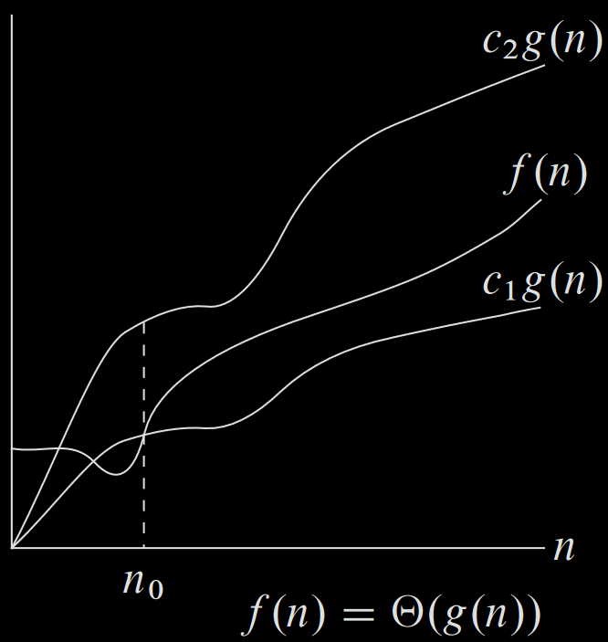

Evaluating computer algorithms
Recap - Two main ideas
Idea 1: how long the algorithm takes as a function of the size of its input
- Robot tour
- Sorting
- Prime factorization
Idea 2: focus on how fast the function grows with the input size
- more specifically on the order of growth
Linear search
def linear_search(A, x):
found = -1
for i in range(len(A)):
if x == A[i]:
found = i
return found
Function definition: The linear_search function takes 2 arguments - A is a list and x is the element that we are trying to find.
Assignment: assigning the value 1 to the variable found
For-loop: len(A) returns the length of the list and the loop runs from 0 to the length (exclusive).
Check condition: If the value of the item at the current index is equal to x, we set found to the current index.
Return: Once out of the loop, we return the value at found.
Question: Is this the most efficient implementation?
Characterizing running times
Recall that we characterize the running time as a function of the input size
Question: What is the input size here?
We will find the time as a function of the list length
Simplifying assumption: each individual operation takes a fixed amount of time independent of input size
- arithmetic/logical operations
- function calls/returns
- memory accesses
Running time of linear search
def linear_search(A, x):
found = -1
for i in range(len(A)):
if x == A[i]:
found = i
return found
$c_1 \times 1$
$c_2 \times 1$
$c_3 \times (n+1)$, where $n$ is the length of the array.
$c_4 \times n$
$c_5 \times n_x$, where $n_x$ is the number of occurrences of $x$ in $A$
$c_6 \times 1$
Total time $ = c_1 + c_2 + c_3(n+1) + c_4n + c_5n_x + c_6$
$ = c_1+c_2+c_3+c_6 + (c_3+c_4)n + c_5n_x$
$ = k_1 + k_2n + k_3n_x$
Question: What is the range of $n_x$?
Upper and Lower bound
$n_x$ lies between $0$ and $n-1$.
The upper bound of running time is $k_1 + k_2n + k_3n$ and the lower bound is $k_1 + k_2n$
Both of these bounds are of the form $c + nd$ , where $c$ and $d$ are constants that do not depend on $n$ - a linear function
We use a special notation to indicate that a running time is bounded from above and below by some linear functions of $n$.
We write that the running time is $\mathcal{\Theta}(n)$.
Order of growth
Only the dominant term in the running time, and we don’t consider coefficients
Coefficients matter, but depend heavily on the extrinsic factors
What happened to the constant and lower order terms?
Recall that we are only concerned with how a function grows with input size. For linear search its $c + nd =$ $\mathcal{\Theta}(n)$.
Why do we ignore the lower order term $c$?
As n increases, it dominates the lower order terms.
- Extra precision is not worth the effort
Why do we ignore the constant factor $d$?
$d$ depends on many other extrinsic factors which we cannot calculate. Hence it serves no purpose in evaluating the speed of an algorithm, or comparing one algorithm with another.
Example
$n^2/4 + 100n + 50 = \Theta(\qquad)_?$
Question: When will the lower order terms dominate $n^2/4$?
Question: What does dominate mean in this context?
A better implementation of linear search
def linear_search(A, x):
for i in range(len(A)):
if x == A[i]:
return i
return -1
Question: Does this algorithm and the one before solve the same problem?
Question: In terms of the performance, how is this algorithm different?
Running time of better linear search
def linear_search(A, x):
for i in range(len(A)):
if x == A[i]:
return i
return -1
$c_1 \times 1$
$c_1 \times 1 + c_2 \times (\qquad)^?$
$c_1 \times 1 + c_2 \times (\qquad)^? + c_3 \times (\qquad)^? + c_4 \times (\qquad)^?$
$c_1 \times 1 + c_2 \times (\qquad)^? + c_3 \times (\qquad)^? + c_4 \times (\qquad)^? + c_5 \times (\qquad)^?$
$c_1 + c_2 \times x_i + c_3 \times x_i + c_4 + c_5$, where $x_i$ is the first index where $x$ appears in $A$, or $n$ if $x$ does not appear in $A$.
Upper and lower bounds
$c_1 + c_2 \times x_i + c_3 \times x_i + c_4 + c_5 = k_1 + k_2\times x_i$
In the worst case, the algorithm requires $\mathcal{\Theta}(n)$ steps.
In the best case, it requires $\mathcal{\Theta}(1)$ (constant w.r.t input).
In the average case, it takes _______________
So we see that we cannot use $\mathcal{\Theta}$ notation for a blanket statement that covers all cases of the running time.
The Big-oh notation
When we say that an algorithm takes $\mathcal{O}(n)$, we mean that the algorithm takes $\mathcal{\Theta}(n)$ steps in the worst case, regardless of what the best case is.
When we say an algorithm takes $\mathcal{\Omega}(n)$ steps, we mean that the algorithm takes $\mathcal{\Theta}(n)$ steps in the best case.
Question: How would you characterize the running time of the better linear search in $\mathcal{O}$ and $\mathcal{\Omega}$ notation?
Characterize the running time for the following algorithm
def useless_algo(A):
n = len(A)
sum = 0
for i in range(n):
sum += A[i]
for i in range(n*n):
sum += A[0]
return 0 == sum % 2
Upper Bound: Big-O
Consider any two functions $f(n)$ and $g(n)$. We say that $g(n)$ is an asymptotic upper bound of $f(n)$ if there exists two positive constants $c > 0$ and $n_0 > 0$ such that $f(n) \leq c \times g(n)$ for every $n \geq n_0$.
If $g(n)$ is an asymptotic upper bound of $f(n)$, then we write $f(n) = O(g(n))$.

Example 1
Show that $5 = O(1)$
Proof:
Let $f(n) = 5$ and $g(n) = 1$.
Choose $c = 6$ and $n_0 = 1$.
Then, $cg(n) = 6\times 1 > 5 = f(n)$.
Example 2
Show that $16 + 7n = O(n)$
Proof:
Let $f(n) = 16 + 7n$ and $g(n) = n$.
Choose $c = 23$ and $n_0 = 1$;
Then, $cg(n) = 23n \geq 16 + 7n = f(n)$ for any $n \geq 1$.
Alternatively, you can also choose $c = 8$ and $n_0 = 20$; then $cg(n) = 8n \geq 7n+16 = f(n)$ for any $n \geq 16$.
example 3
Show that $K_1n + K_2n^2 = O(n^2)$
Proof:
Let $f(n) = K_1n + K_2n^2$ and $g(n) = n^2$.
Choose $c = (K_1+K_2)$ and $n_0 = 1$;
Then, $cg(n) = K_1n^2 + K_2n^2 \geq K_1n + K_2n^2 = f(n)$ for any $n\geq1$.
Example 4
Show that $6n^2 + 14 = O(n^3)$
Proof:
Let $f(n) = 6n^2 + 14$ and $g(n) = n^3$.
Choose $c = 1$ and $n_0 = 8$;
Then, $cg(n) = n^3 > 6n^2 + 14 = f(n)$ for any $n\geq 7$.
Lower Bound: Big-Omega
Consider any two functions $f(n)$ and $g(n)$. We say that $g(n)$ is an asymptotic lower bound of $f(n)$ if there exists two positive constants $c > 0$ and $n_0 > 0$ such that $f(n) \geq c \times g(n)$ for every $n \geq n_0$.
If $g(n)$ is an asymptotic lower bound of $f(n)$, then we write $f(n) = \Omega(g(n))$.

Example 1
Show that $5 = \Omega(1)$
Proof:
Let $f(n) = 5$ and $g(n) = 1$.
Choose $c = 1$ and $n_0 = 1$;
Then, $cg(n) = 1\times 1 < 5 = f(n)$.
Example 2
Show that $16 + 7n = \Omega(n)$
Proof:
Let $f(n) = 16 + 7n$ and $g(n) = n$.
Choose $c = 5$ and $n_0 = 1$;
Then, $cg(n) = 5n < 5n+16 = f(n)$ for any $n\geq 1$.
Example 3
Show that $K_1n + K_2n^2 = \Omega(n^2)$
Proof:
Let $f(n) = K_1n + K_2n^2$ and $g(n) = n^2$.
Choose $c = K_2$ and $n_0 = 1$;
Then, $cg(n) = K_2n^2 \leq K_1n + K_2n^2 = f(n)$ for any $n \geq 1$.
Example 4
Show that $6n^2 + 14 = \Omega(n)$
Proof:
Let $f(n) = 6n^2 + 14$ and $g(n) = n$.
Now choose $c = 1$ and $n_0 = 1$;
Then, $cg(n) = n < 6n^2 + 14 = f(n)$ for any $n\geq 1$.
Tight Bound: Big-Theta
Consider any two functions $f(n)$ and $g(n)$. We say that $g(n)$ is an asymptotic tight bound of $f(n)$ if there exists three positive constants $c_1 > 0$, $c_2 > 0$, and $n_0 > 0$ such that $c_2 \times g(n) \geq f(n) \geq c_1 \times g(n)$ for every $n \geq n_0$.
If $g(n)$ is an asymptotic tight bound of $f(n)$, then we write $f(n) = \Theta(g(n))$.

Example 1
Show that $5 = \Theta(1)$
Proof:
Let $f(n) = 5$ and $g(n) = 1$. Choose $n_0 = 1$.
If $c_2 = 6$, then $c_2g(n) = 6\times 1 > 5 = f(n)$.
If $c_1 = 1$, then $c_1g(n) = 1\times 1 < 5 = f(n)$.
Example 2
Show that $16 + 7n = \Theta(n)$
Proof:
Let $f(n) = 16 + 7n$ and $g(n) = n$. Choose $n_0 = 1$.
If $c_2 = 23$, then $c_2g(n) = 23n \geq 16 + 7n = f(n)$ for any $n \geq 1$.
If $c_1 = 5$, then $c_1g(n) = 5n < 5n+16 = f(n)$ for any $n \geq 1$.
Example 3
Show that $K_1n + K_2n^2 = O(n^2)$
Proof:
Let $f(n) = K_1n + K_2n^2$ and $g(n) = n^2$. Choose $n_0 = 1$.
If $c_2 = (K_1+K_2)$, then $c_2g(n) = K_1n^2 + K_2n^2 \geq K_1n + K_2n^2 = f(n)$ for any $n\geq 1$.
If $c_1 = K_2$, then $c_1g(n) = K_2n^2 \leq K_1n + K_2n^2 = f(n)$ for any $n \geq 1$.
Important properties
- If $f(n) = O(g(n))$ then $g(n) = \Omega(f(n))$, and vice-versa.
- If $f(n) = O(g(n))$ then $\alpha f(n) = O(g(n))$ for any constant $\alpha > 0$.
- If $f(n) = O(g(n))$ and $g(n) = O(h(n))$ then $f(n) = O(h(n))$.
- $f(n) = \Theta(g(n))$ if and only if $f(n) = O(g(n))$ and $f(n) = \Omega(g(n))$.
Important properties (contd.)
- If $f_1(n) = O(g(n))$ and $f_2(n) = O(g(n))$ then $f_1(n) + f_2(n) = O(g(n))$.
- If $f_1(n) = O(g_1(n))$ and $f_2(n) = O(g_2(n))$ then $f_1(n) + f_2(n) = O(g_{max}(n))$, where $g_{max}(n)$ is the asymptotically larger function among $g_1(n)$ and $g_2(n)$.
- If $f_1(n) = O(g_1(n))$ and $f_2(n) = O(g_2(n))$ then $f_1(n)*f_2(n) = O(g_1(n)*g_2(n))$.
Another way to understand asymptotic bounds
$f(n) = O(g(n))$ iff $\lim_{n\rightarrow \infty}\frac{g(n)}{f(n)} > 0$
$f(n) = \Omega(g(n))$ iff $\lim_{n\rightarrow \infty}\frac{f(n)}{g(n)} > 0$
$f(n) = \Theta(g(n))$ iff $\lim_{n\rightarrow \infty}\frac{g(n)}{f(n)} =c_1$ and $\lim_{n\rightarrow \infty}\frac{g(n)}{f(n)} =c_2$, where $c_1$ and $c_2$ are two arbitrary non-zero finite constants.